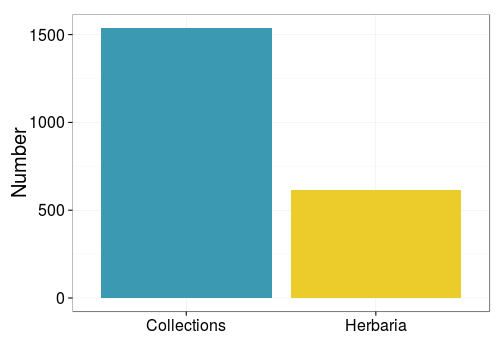

A list of US-based Natural History Collections
SPNHC -- May 21st, 2015
List of collections
- GRBio (includes IH)
- List of institutions/collections from various sources
- Institution/collections websites
Data we capture
For humans
For computers
Focus on collections
Needed by iDigBio
Needed by the community to: - discover specimens - improve collaborations - identify small collections that need special attention
How many?
- 903 institutions
- 1538 collections (613, 40% being herbaria)

Already in iDigBio
302 collections (20% )
Future directions
- Representation of collection concept in iDigBio
- Seamless transfer of information
- Common data model
- API access
- example for community